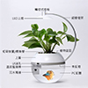
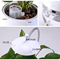

種子市場
-
 朝天椒
朝天椒


朝天椒
發芽適溫：25~30℃
平均採收：75-90天
日照條件：半日照可
辣味極強，早生，豐產
$50/包

魚缸超市

香草與魚 Herb & Fish



$999/包
【產品規格】
包裝內容：香草與魚2.0智能版x1組(包含魚缸主體、燈架)、發泡煉石x1包、植物固定海綿、USB充電線x1(不含插頭)
材 質：鋁合金、塑料
商品尺寸：23.3 x 17.7 x 35.8 cm
容 量：1300 ml
淨 重：450g
電壓規範：DC 5V 1A (若連接電腦建議使用USB3.0接孔)
植物燈 ：12 Light bulbs, 2w
魚缸燈 ：6 Light bulbs, 1w
感溫棒 ：IP67金屬導熱封裝ds18b20 溫度感測晶片
產 地：台灣製造
【注意事項】
※原廠保留產品規格修改權利，數據請以原廠資料為準。
※PC缸體建議使用超細纖維布清洗，禁止使用菜瓜布、鋼刷等硬材質，以免造成缸面刮花。
※商品圖檔為示意圖，其內容物不含植株及活體魚，實際商品內容僅含標準配備，購買前請詳閱配備說明。
※建議飼養體積較小的淡水魚種，例：金魚/鬥魚/球魚/米老鼠/孔雀魚...等
※魚種的生活飲食習慣以及疾病問題，可向水族館專業人員諮詢。
※本賣場產品圖片，可能會因為拍攝角度、環境、螢幕設定、燈光明暗等因素，而產生色差，故請以實際收到貨品為準。